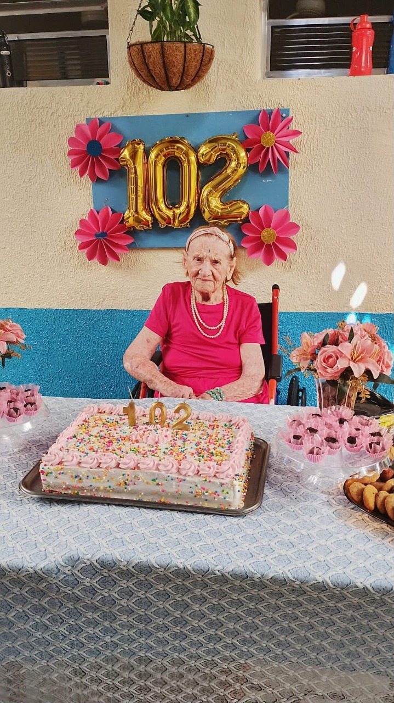
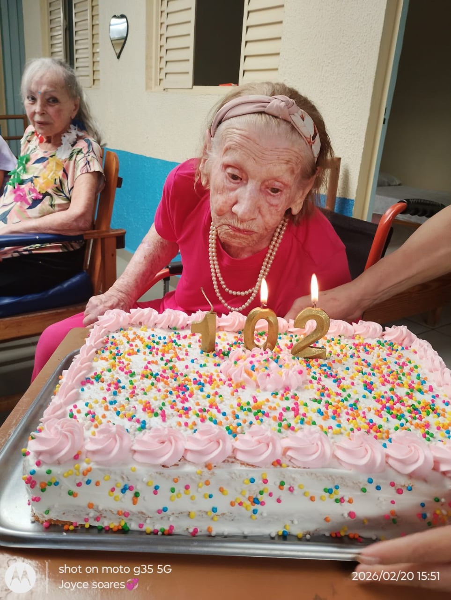

Cuidado com respaldo técnico
A estrutura segue normas sanitárias e foi organizada para oferecer segurança, conforto e acessibilidade ao público sênior.
A Incantare Residencial Sênior oferece assistência no dia a dia com atenção, carinho, rotina organizada e respeito às necessidades de cada pessoa idosa.


O Incantare Residencial Sênior nasceu com a missão de acolher pessoas idosas com respeito, carinho e assistência de verdade. Cada detalhe da casa foi pensado para que hóspedes e familiares encontrem conforto, tranquilidade e uma rotina acompanhada de perto.
Contamos com sede própria, ambiente amplo, seguro e totalmente adaptado, seguindo todas as normas da RDC Nº 502 e da Vigilância Sanitária de Taubaté. Isso nos permite oferecer mais acessibilidade, segurança e bem-estar em cada espaço do residencial.
Nossa equipe atua com carinho, dedicação e atenção individualizada, promovendo autonomia, convivência saudável, atividades terapêuticas e momentos de lazer. Mais do que cuidar, buscamos oferecer acolhimento, conforto e segurança em todos os momentos.
A estrutura segue normas sanitárias e foi organizada para oferecer segurança, conforto e acessibilidade ao público sênior.
O acompanhamento é individualizado, com escuta, presença constante e atenção ao ritmo, à história e às necessidades de cada morador.
Atividades terapêuticas, momentos de lazer e convivência saudável ajudam a manter a autonomia e tornam o dia a dia mais leve e acolhedor.
Aqui, o cuidado é construído com presença diária, acompanhamento técnico e uma rotina pensada para promover saúde, conforto, autonomia e convivência saudável.
Nutricionista realiza avaliação mensal dos idosos e elabora o cardápio conforme as necessidades de cada rotina.
Educador físico atende duas vezes por semana para estimular mobilidade, disposição e qualidade de vida.
Fisioterapeuta acompanha os idosos uma vez por semana, reforçando equilíbrio, funcionalidade e prevenção.
A musicoterapia acontece semanalmente e contribui para memória, expressão, conexão e bem-estar emocional.
Médica geriatra faz acompanhamento uma vez por mês, com apoio de enfermaria geriátrica em horário administrativo.
Durante o dia, a equipe conta com 4 cuidadoras; à noite, 2 cuidadoras mantêm a assistência e a segurança.
Na cozinha, 2 cozinheiras trabalham em dias alternados e permanecem no residencial do café da manhã ao jantar.
Celebração Eucarística aos sábados e terço às quintas, sempre com participação religiosa opcional para os idosos.
Nutrição, geriatria e enfermaria ajudam a acompanhar a saúde com mais proximidade e atenção contínua.
Educador físico, fisioterapia, musicoterapia e atividades terapêuticas valorizam movimento, expressão e bem-estar.
Cuidadoras durante o dia e à noite mantêm o suporte necessário para uma rotina segura e acolhedora.
Datas comemorativas, espiritualidade opcional e lazer fortalecem vínculos e tornam o residencial mais vivo e humano.
Selecionamos registros reais da rotina, de atividades e de datas comemorativas para mostrar como o cuidado também passa por convivência, alegria e presença verdadeira.


.jpeg)
.jpeg)

A melhor forma de sentir isso é conhecer a casa de perto, entender como a rotina funciona e ver o cuidado acontecendo no ambiente, na equipe e na relação com cada idoso.
Uma casa organizada para oferecer mais segurança, acessibilidade e tranquilidade no dia a dia.
Profissionais e cuidadoras sustentam uma rotina de atenção contínua, afeto e acompanhamento real.
Conhecer os quartos, a rotina e os espaços ajuda a família a tomar uma decisão com mais confiança.
Se a sua dúvida for mais específica, nossa equipe pode orientar melhor por telefone ou WhatsApp.
A Incantare oferece cuidado humanizado com assistência multidisciplinar, rotina assistida, atividades terapêuticas, momentos de lazer e atenção individualizada.
A sede é própria, ampla, segura e adaptada. Os quartos são em dupla e todos contam com banheiro.
Sim. Há nutricionista com avaliação mensal e cardápio, educador físico duas vezes por semana, fisioterapeuta e musicoterapia semanalmente, médica geriatra mensal e enfermaria geriátrica em horário administrativo.
Sim. Há Celebração Eucarística aos sábados e terço às quintas, sempre com participação opcional.
Quando o assunto é cuidado com quem a gente ama, visitar, perguntar e sentir confiança faz toda a diferença.
Rua Pedro Dias, 30 - Santa Tereza
Taubaté - SP
CNPJ 45.293.948/0001-10
Atendimento das 07:00 às 17:00